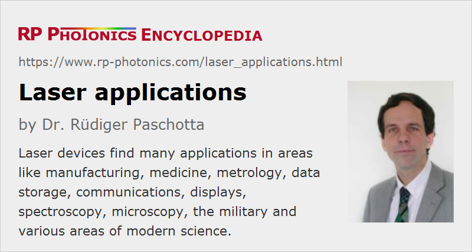

Laser Applications
Definition: applications involving laser devices
German: Laseranwendungen
How to cite the article; suggest additional literature
Author: Dr. Rüdiger Paschotta
Lasers are sources of light with very special properties, as discussed in the article on laser light. For that reason, there is a great variety of laser applications, leading to a total of over 8 billion USD of global laser sales (as of 2013). The following sections give a brief overview.
Manufacturing
Lasers are widely used in manufacturing, e.g. for cutting, drilling, welding, cladding, soldering (brazing), hardening, ablating, surface treatment, marking, engraving, micromachining, pulsed laser deposition, lithography, etc. In many cases, relatively high optical intensities are applied to a small spot, leading to intense heating, possibly evaporation and plasma generation. Essential aspects are the high spatial coherence of laser light, allowing for strong focusing, and often also the potential for generating intense pulses.
Laser processing methods have many advantages, compared with mechanical approaches. They allow the fabrication of very fine structures with high quality, avoiding mechanical stress such as caused by mechanical drills and blades. A laser beam with high beam quality can be used to drill very fine and deep holes, e.g. for injection nozzles. A high processing speed is often achieved, e.g. in the fabrication of filter sieves. Further, the lifetime limitation of mechanical tools is removed. It can also be advantageous to process materials without touching them.
The requirements on optical power and beam quality depend very much on the application and the involved materials. For example, laser marking on plastics can be done with fairly low power levels, whereas cutting, welding or drilling on metals requires much more – often multiple kilowatts. Soldering applications may require a high power but only a moderate beam quality, whereas particularly remote welding (i.e., welding with a substantial distance between laser head and welded parts) depends on a high beam quality.
Laser-aided manufacturing often allows one to produce the essentially same parts with higher quality and/or lower cost. Also, it is often possible to realize entirely new part designs or the use of new materials. For example, automobile parts are increasingly made of light materials such as aluminum, which require tentatively more laser joining operations. Weight reductions are possible not only by the user of lighter materials, but also e.g. by producing them with shorter flanges due to higher precision than is feasible with conventional production methods.
Lasers are also widely used for alignment purposes. Alignment lasers may simply emit a Gaussian laser beam, forming a circular spot on a workpiece, a line, a cross, or some other pattern. They are important for many manufacturing processes.
Medical Applications
There is a wide range of medical applications. Often these relate to the outer parts of the human body, which are easily reached with light; examples are eye surgery and vision correction (LASIK), dentistry, dermatology (e.g. photodynamic therapy of cancer), and various kinds of cosmetic treatment such as tattoo removal and hair removal.
Lasers are also used for surgery (e.g. of the prostate), exploiting the possibility to cut tissues while causing minimal bleeding. Some operations can be done with endoscopic means; an endoscope may contain an optical fiber for delivering light to the operation scene and another fiber for imaging, apart from additional channels for mechanical instruments.
Very different types of lasers are required for medical applications, depending on the optical wavelength, output power, pulse format, etc. In many cases, the laser wavelength is chosen such that certain substances (e.g. pigments in tattoos or caries in teeth) absorb light more strongly than surrounding tissue, so that they can be more precisely targeted.
Medical lasers are not always used for therapy. Some of them rather assist the diagnosis, e.g. via methods of ocular imaging, laser microscopy or laser spectroscopy (see below).
For more details, see the article on medical lasers.
Metrology
Lasers are widely used in optical metrology, e.g. for extremely precise position measurements and optical surface profiling with interferometers, for long-distance range finding and navigation.
Laser scanners are scanning the direction of laser beams, which can read e.g. bar codes or other graphics over some distance. It is also possible to scan three-dimensional objects, e.g. in the context of crime scene investigation (CSI).
Optical sampling is a technique applied for the characterization of fast electronic microcircuits, microwave photonics, terahertz science, etc.
Lasers also allow for extremely precise time measurements and are therefore essential component of optical clocks which are beginning to outperform the currently used cesium atomic clocks.
Fiber-optic sensors, often probed with laser light, allow for the distributed measurement of temperature, stress, and other quantities e.g. in oil pipelines and wings of airplanes.
Data Storage
Optical data storage e.g. in compact disks (CDs), DVDs, Blu-ray Discs and magneto-optical disks, nearly always relies on a laser source, which has a high spatial coherence and can thus be used to address very tiny spots in the recording medium, allowing a very high density data storage. Another case is holography, where the temporal coherence can also be important.
Communications
Optical fiber communication, extensively used particularly for long-distance optical data transmission, mostly relies on laser light in optical glass fibers. Free-space optical communications, e.g. for inter-satellite communications, is based on higher-power lasers, generating collimated laser beams which propagate over large distances with small beam divergence.
One may also transmit analog RF and microwave signals using radio and microwave over fiber technology.
Displays
Laser projection displays containing RGB sources can be used for cinemas, home videos, flight simulators, etc., and are often superior to other displays concerning possible screen dimensions, resolution and color saturation. However, further reductions in manufacturing costs will be essential for deep market penetration.
Laser Spectroscopy
Laser spectroscopy is used in many different forms and in a wide range of applications. For example, atmospheric physics and pollution monitoring profits from trace gas sensing with differential absorption LIDAR technology. Solid materials can be analyzed with laser-induced breakdown spectroscopy. Laser spectroscopy also plays a role in medicine (e.g. cancer detection), biology, and various types of fundamental research, partly related to metrology (see above).
Microscopy
Laser microscopes and setups for optical coherence tomography (OCT) provide images of, e.g., biological samples with very high resolution, often in three dimensions. It is also possible to realize functional imaging.
Various Scientific Applications
Laser cooling makes it possible to bring clouds of atoms or ions to extremely low temperatures. This has applications in fundamental research and also for industrial purposes.
Particularly in biological and medical research, optical tweezers can be used for trapping and manipulating small particles, such as bacteria or parts of living cells.
Laser guide stars are used in astronomical observatories in combination with adaptive optics for atmospheric correction. They allow substantially increased image resolution even in cases where a sufficiently close-by natural guide star is not available.
Energy Technology
In the future, high-power laser systems might play a role in electricity generation. Laser-induced nuclear fusion is investigated as a alternative to other types of fusion reactors. High-power lasers can also be used for isotope separation.
Military Applications
There are a variety of military laser applications. In relatively few cases, lasers are used as weapons; the “laser sword” has become popular in movies, but not in practice. Some high-power lasers are currently developed for potential use as directed energy weapons on the battle field, or for destroying missiles, projectiles and mines.
In other cases, lasers function as target designators or laser sights (essentially laser pointers emitting visible or invisible laser beams), or as irritating or blinding (normally not directly destroying) countermeasures e.g. against heat-seeking anti-aircraft missiles. It is also possible to blind soldiers temporarily or permanently with laser beams, although the latter is forbidden by rules of war.
There are also many laser applications which are not specific for military use, e.g. in areas such as range finding, LIDAR, and optical communications.
Suppliers
The RP Photonics Buyer's Guide contains 30 suppliers for laser applications. Among them:
Questions and Comments from Users
Here you can submit questions and comments. As far as they get accepted by the author, they will appear above this paragraph together with the author’s answer. The author will decide on acceptance based on certain criteria. Essentially, the issue must be of sufficiently broad interest.
Please do not enter personal data here; we would otherwise delete it soon. (See also our privacy declaration.) If you wish to receive personal feedback or consultancy from the author, please contact him e.g. via e-mail.
By submitting the information, you give your consent to the potential publication of your inputs on our website according to our rules. (If you later retract your consent, we will delete those inputs.) As your inputs are first reviewed by the author, they may be published with some delay.
See also: lasers, medical lasers, laser microscopy, laser spectroscopy, laser light, photonics
and other articles in the category lasers
|  |
If you like this page, please share the link with your friends and colleagues, e.g. via social media:
These sharing buttons are implemented in a privacy-friendly way!